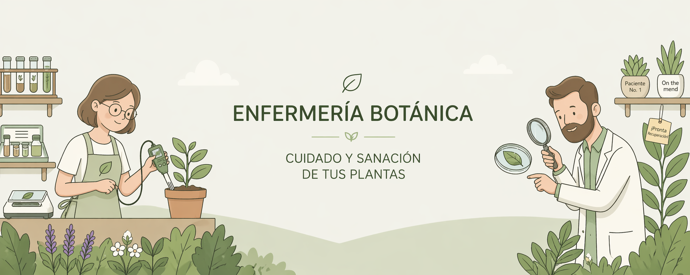
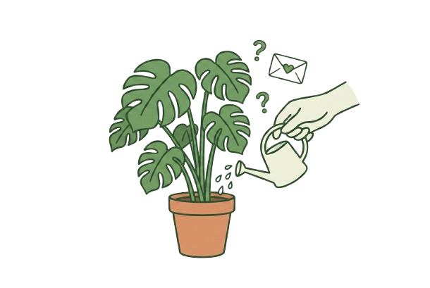

¿Necesitas Ayuda?
Si necesitas ayuda puedes ir a nuestra sección de contacto para resolver tus dudas sobre cuidado de plantas

Ir a ContactoContacta con un Agente
Puedes contactar con un agente en línea para obtener asesoría especializada sobre salud de tus plantas
Glosario Botánico
Consulta nuestro completo glosario botánico en XML para conocer términos y definiciones
Consultar Glosario